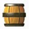
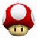
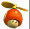
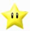
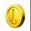
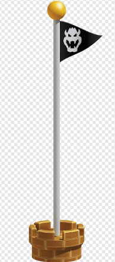
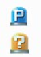

Objetos
BARRIL: Este objeto lo puedes coger para utilizarlo como arma arrojadiza contra tus enemigos.

BLOQUE POW: Este tipo de bloques lo puedes puedes coger. Cuando lo lanzas eliminarás automáticamente a todos los enemigos que estén tocando el suelo.

BLOQUE HELICOPTERO: Este objeto lo puedes coger para poder volar. Una vez lo tengas en tus manos, agita el mando de Wii para subir volando a lo alto de la pantalla y caer planeando.

BLOQUE INTERROGACION: Dentro de estos bloques puedes encontrar monedas, vidas extra, champiñones, flores de fuego, entre mas objetos.

BLOQUE LADRILLO: Estos bloques te los encuentras en casi todos los niveles. Los encontrarás formando plataformas y al golpearlos puede que te den monedas o algún otro objeto, aunque lo normal es que no contengan nada y se rompan.

BLOQUE LUMINOSO: Este tipo de bloques desprenden algo de luz, por lo que solo los encontrarás en fases que están a oscuras. Puedes cogerlos para llevarlos contigo a modo de linterna, aunque no iluminan demasiado.

CHAMPIÑION: Al coger un champiñón te harás más grande (Super). Si cuando eres Super te golpea un enemigo, volverás al tamaño normal.

CHAMPIÑION MINI: Al coger este Champiñón, tu personaje se convertirá en Mini. Al ser diminuto puede pasar por estrechos pasillos y pequeñas tuberías, además de poder dar grandes saltos y de poder caminar sobre el agua.

CHAMPICOPTERO: Cuando coges este objeto, tu personaje se pondrá un traje que lleva una hélice en la cabeza. Cuando lo lleves puesto, puedes volar agitando el mando de Wii para después caer planeando.

VIDA EXTRA: Al coger uno de estos champiñones te obsequiarán con una vida extra.

FLOR DE FUEGO: Al coger la flor, tu personaje se pondrá el traje de fuego y podrá lanzar bolas de fuego para eliminar a sus enemigos.

FLOR DE HIELO: Al coger la flor, tu personaje se pondrá el traje de hielo y podrá lanzar bolas de hielo para congelar a los enemigos.

ESTRELLA: La estrella suele aparecer dentro de los bloques amarillos o de algún bloque de ladrillo y te hace invulnerable durante un tiempo de 10 segundos.

TRAJE POLAR: Cuando coges este objeto, tu personaje se vestirá de pingüino y podrás lanzar bolas de hielo además de poder deslizarte rápidamente por el suelo.

MONEDA: Al conseguir 100 monedas te obsequiarán con una vida extra.

MONEDA AZUL: Tiene la misma función que las monedas normales, pero solo aparecen temporalmente tras pulsar un interruptor azul.

MONEDA ROJA: Aparecen 8 monedas rojas en cada nivel cuando pasas por el anillo rojo (aparecen durante un tiempo limitado). Si coges las ocho antes de que desaparezcan te recompensarán con un premio.

MONEDA ESTRELLA: Hay tres monedas de este tipo escondidas en cada nivel. Con ellas puedes pagar en el Castillo de Peach del primer mundo para recibir pistas sobre cada nivel. Ademas si consigues todas las monedas estrella de un mundo, puedes desbloquear una fase del mundo nueve. Tener en cuenta que cada fase se desbloquea al obtener todas las monedas estrella de su respectivo mundo.

PUNTO INTERMEDIO:En la mayoría de las fases, te encontrarás un banderín de este tipo en la mitad del recorrido. Cuando lo atraviesas, cambia de color negro a rojo y tu personaje se hará grande (si no lo era anteriormente). Además, si pierdes la vida después de atravesarlo y vuelves a entrar en esta fase, empezarás a partir de ese punto.

META: Esta meta te la encuentras al final de cada fase y al agarrarte a ella te la darán por completada y en el mapa se abrirá el camino que te lleva a la siguiente fase. Dependiendo a la altura que te agarres a la meta, te darán más o menos puntos y si te agarras por encima del banderín, conseguirás una vida extra.

META OCULTA: Esta meta es igual a la meta normal, pero solo se encuentra siguiendo un camino secreto. Al llegar a la meta oculta, se abrirá un camino secundario en el mapa general, es decir, que desde las fases que tengan esta meta, se abrirán dos caminos (uno por cada meta). No todas las fases tienen meta oculta.

INTERRUPTOR: Al pisar el interruptor azul, aparecerán monedas azules que en muchos casos te indicarán un camino, Si el interruptor es amarillo y lo pisas, pueden aparecer plataformas o también puede que los bloques de piedra se conviertan en monedas y las monedas en bloques durante un tiempo.
